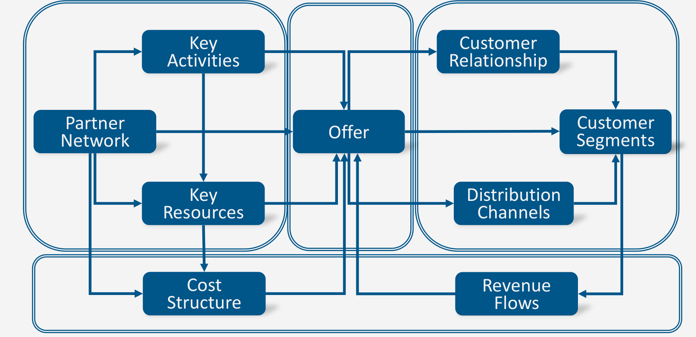

Business Model Canvas: test the connections
Digital Business · Course 95696 · WiSe 2026/27
Nine blocks, one connected explanation
The Business Model Canvas makes a business model discussable by separating its components while keeping their dependencies visible. Filling boxes is not the objective: the explanation must connect an offer to a customer segment, delivery capabilities and a viable revenue/cost logic. A channel is a route to reach and deliver to customers; a relationship concerns how interaction is maintained. A resource is something required to operate; an activity is something performed. A partner supplies contributions the focal organization does not simply control internally.
The lecture uses Offer, Partner Network and Revenue Flows as labels. Keep those terms when reconstructing its diagram. The following crop preserves all nine blocks and their connecting arrows; the textual mapping below makes the small labels accessible on narrow screens.

Read the arrows as dependencies to investigate, not proven causal effects or a prescribed sequence for completing the boxes. A promised same-day service requires activities and resources capable of meeting that promise. A completed Canvas neither proves demand nor replaces a competitive strategy.
Worked model: a hypothetical bicycle service
This is an own teaching case, not an official lecture case or empirical result. A mobile bicycle service targets commuters who need reliable repairs without visiting a workshop.
| Lecture block | Case hypothesis |
|---|---|
| Partner Network | Parts supplier and independent mechanics |
| Key Activities | Schedule visits, diagnose faults, repair and check quality |
| Key Resources | Booking system, tools and dispatch knowledge |
| Offer | Convenient repair at the customer’s location |
| Customer Relationship | Named support contact and follow-up |
| Distribution Channels | Website booking and on-site delivery |
| Customer Segments | Commuters within the service area |
| Cost Structure | €35 variable cost per completed repair; €2,000 fixed per month |
| Revenue Flows | €60 per completed repair |
Assume 120 completed repairs per month. Revenue = 120 × €60 = €7,200/month. Variable costs = 120 × €35 = €4,200/month. Contribution = €3,000/month; operating result = €3,000 − €2,000 = €1,000/month. Equality occurs at 2,000/(60 − 35) = 80 repairs/month. These simplified net figures exclude taxes, investment and financing; available capacity and demand are assumptions, not conclusions.
The model’s key dependency is practical: convenient delivery adds travel time. If the promised location service raises variable cost or reduces capacity, both the cost structure and achievable revenue change. Test scheduling capacity and customer willingness to pay, not just whether the website accepts bookings.
Understanding pathway
These are own exercises, not official assignments. Write your attempt before opening a hint or solution. Assess your reasoning with the explicit criteria; keyword matching is not evidence of understanding.
1. Reconstruct the Canvas
Your attempt: Without looking, name the nine blocks and explain two links using the bicycle case. Distinguish channel from relationship.
Optional hint
Group capabilities, offer, customers and economics.
Complete worked answer and criteria
The nine blocks are Partner Network, Key Activities, Key Resources, Offer, Customer Relationship, Distribution Channels, Customer Segments, Cost Structure and Revenue Flows. Mechanics and tools enable on-site repair; completed customer transactions generate fee revenue. The website is a channel, whereas continuing support describes a relationship. Naming blocks without explaining their links is incomplete.
Assessment: All nine blocks (2); two justified links (1); channel/relationship distinction (1).
2. Apply the cost logic
Your attempt: At only 70 completed repairs, compute revenue, contribution and operating result. Find the whole repair volume needed for €500 monthly operating result.
Optional hint
Contribution per repair is €25, not €60.
Complete worked answer and criteria
Revenue: 70 × €60 = €4,200/month. Contribution: 70 × €25 = €1,750/month. Operating result: €1,750 − €2,000 = −€250/month. Solve 25q − 2,000 = 500: q = 100 completed repairs/month. A required volume is not a forecast or capacity proof.
Assessment: €4,200; €1,750; −€250; equation/100 repairs; conditional interpretation: 1 point each (5).
3. Diagnose an attractive but incoherent Canvas
Your attempt: A team writes “premium relationship” under revenue and claims that a full Canvas proves a profitable strategy. Diagnose both statements and specify one test.
Optional hint
A relationship, a payment and competitive success answer different questions.
Complete worked answer and criteria
Premium support describes a possible relationship; revenue requires a payer, price and transaction logic. A completed model contains hypotheses, not proof of profitability or sustainable advantage. Run a pilot measuring completed repairs, total travel/service cost and willingness to pay against alternatives, rather than merely counting bookings.
Assessment: Correct relationship classification; explicit revenue logic; model/proof distinction; concrete relevant test: 1 point each (4).
4. Transfer to a wider service area
Your attempt: Travel raises variable cost to €45 per repair and limits monthly capacity to 110 repairs. Price and fixed costs stay unchanged. Can the original €1,000 result be achieved? Show the calculation and one coherent response.
Optional hint
Compare the target-volume requirement with capacity.
Complete worked answer and criteria
Margin falls to €15/repair. At maximum capacity, result = 110 × €15 − €2,000 = −€350/month. The €1,000 target needs (2,000 + 1,000)/15 = 200 repairs/month, above capacity. Even break-even needs 133.33 repairs, hence at least 134 whole repairs for a positive result. Narrow the area, change scheduling/costs or test a higher price; any response changes connected blocks and needs evidence about demand and quality.
Assessment: €15; −€350; 200 versus 110; break-even/134; coherent response with dependency: 1 point each (5).
Error reflection and delayed retrieval
Maximum 18 self-assessed points (4 + 5 + 4 + 5). Record an error from your first attempt, explain its cause and write a corrected reasoning step. A final number without its reasoning earns no reasoning credit. Tomorrow: reconstruct the model and solve task 2 unaided. In one week: repeat task 4 at a €75 price while explicitly treating demand as unverified. Check units and interpret the changed assumptions.
Self-check (MC — select all correct answers)
Show the reasoning
b and c preserve the distinctions. a confuses hypotheses with evidence; d ignores variable and fixed costs.
Sources and scope
03 – Strategy Business Models-4.pdf, current Learnweb course 95696. Read on 28 October 2026. Physical PDF pages are used, not the differing printed slide numbers. Original file and extracts remain private. Only the indicated sections are covered.
- Nine-block structure, diagram and dependencies → physical PDF pp. 34–36; crop from p. 34 (printed slide 37).
- Business-model purpose and strategic limits → physical PDF pp. 24–25.
- Bicycle mapping, figures, capacity constraints and all exercises → own didactic applications, not official assignments or original numerical tables.